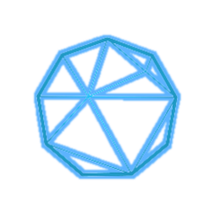

GitHub Portfolio
My Projects
On the Evaluation of the Plausibility and Faithfulness of Sentiment Analysis Explanations
American University of Beirut

In this work, inspired by offline information retrieval, we propose different metrics and techniques to evaluate the explainability of SA models from two angles. First, we evaluate the strength of the extracted “rationales” in faithfully explaining the predicted outcome. Second, we measure the agreement between ExAI methods and human judgment on a homegrown dataset .
- Deep Learning
- Explainable AI
- Faithfulness
- Pytorch
- Python


Explainable Model for EEG Seizure Detection
American University of Beirut
An Explainable EEG Detection Model to assist in the medical field to be able to diagnose epilepsy while providing deeper information.
- Deep Learning
- Explainable AI
- Feature Extraction
- Tensorflow
- Python

Navigating Agent
American University of Beirut
CYENS - Centre of Excellence
Research project on Agent Room Navigation using FacebookResearch Framework for Embodied AI. Testing a combination of RL algorithms while training using different methodologies
- Reinforcement Leanring
- Computer Vision
- Metacognition
- Pytorch
- Python
- Multiprocessing

Extracting Insights
American University of Beirut
Classifying & Extracting Insights from reviews
- Natural Language Processing
- Unsupervised Data Augmentation
- Python
- Keras
- Scikit Learn
- Natural Language Toolkit
Course Interactive Website
With Covid-19 and cloud based lectures/recordings, things became a mess and searching for a specific lecture recordings might need lots of searching. I took therefore the liberaty to create this interactive website initiative as a way to facilitate things on myself and my classmates.
- Interactive Website Design
- HTML
- CSS
- Javascript